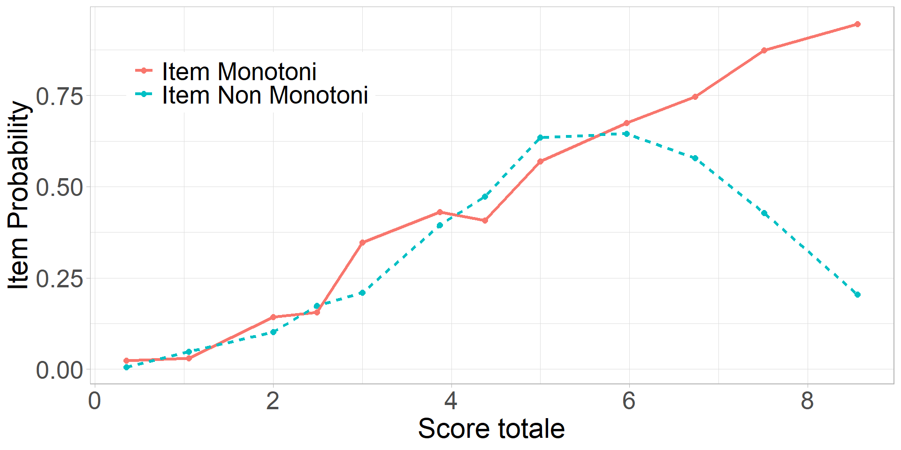
Piccola Introduzione ai Modelli Item response Theory
Ottavia M. Epifania
Introduzione
Variabili latenti
Variabili che non si possono osservare direttamente \(\rightarrow\) Variabili Latenti (e.g., Intelligenza, Depressione, Ansia, Estroversione)
Inferite dagli indicatori \(\rightarrow\) Variabili Osservate (e.g., risposte alle matrici di Raven)
- Operazionalizzazione della variabili latente è di vitale importanza
Esempio
Osserviamo Giorgio e vediamo che Giorgio:
ha tanti amici
è contento quando ha tante persone intorno
cerca sempre di rimanere in contatto con le persone
partecipa a tanti eventi sociali
\(\ldots\)
I comportamenti di Giorgio (Variabili osservate) sono spiegabili sulla base del costrutto latente (variabile latente) estroversione
Modelli per variabili latenti
Modelli matematici che permettono di collegare le variabili latenti con le variabili manifeste
Assunzioni:
Le variabili latenti sono la “causa” della variabilità nelle varibaili osservate
Indipendenza Locale: Una volta presa in considerazione l’effetto della variabile latente, la correlazione tra le variabili manifeste svanisce

A ognuno il suo

IRT vs. CTT
Sia i modelli dell’IRT sia la Classical Test Theory (CTT) hanno come obiettivo la misurazione delle persone
Stabilire la posizione delle persone sul tratto latente di interesse e il loro ordinamento
IRT
Focus \(\rightarrow\) Items
CTT
Focus \(\rightarrow\) Test
Basics of IRT
La probabilità di una risposta osservata (variabile manifesta) dipende sia dalle caratteristiche della persona sia dalle caratteristiche dell’item
Le caratteristiche della persona possono essere descritte da un parametro relativo alla persona \(\rightarrow\) Costrutto Latente (e.g., intelligenza, Ansia, ecc.)
Le caratteristiche dell’item possono essere descritte da uno o più parametri (difficoltà, discriminatività, guessing, careless error)
Le caratteristiche degli item e della persona stanno sullo stesso tratto latente
A ognuno il suo… modello IRT
Diversi modelli IRT a seconda del:
- Tratto Latente:
- Modelli unidimensionali
- Modelli multidimensionali
- Categorie di risposta:
- Item con risposta dicotomica (e.g., true/false, agree/disagree)
- Item con risposta politomica (almeno tre categorie di risposta, e.g., Likert-type scale)
Assunzioni dei modelli IRT
Monotonicità
Unidimensionalità
- Indipendenza locale
Se le assunzioni vengono violate, il modello può sempre essere fittato, ma la sua interpretazione e l’intepretazione delle sue stime sono prive di significato
Monotonicità
La probabilità di rispondere correttamente agli item aumenta all’aumentare del livello del tratto latente
Se questa assunzione viene violata, si hanno dei problemi a livello di validità e attendibilità della misura
Unidimensionalità
L’assunzione di unidimensionalità indica che un solo tratto latente è responsabile delle risposte agli item
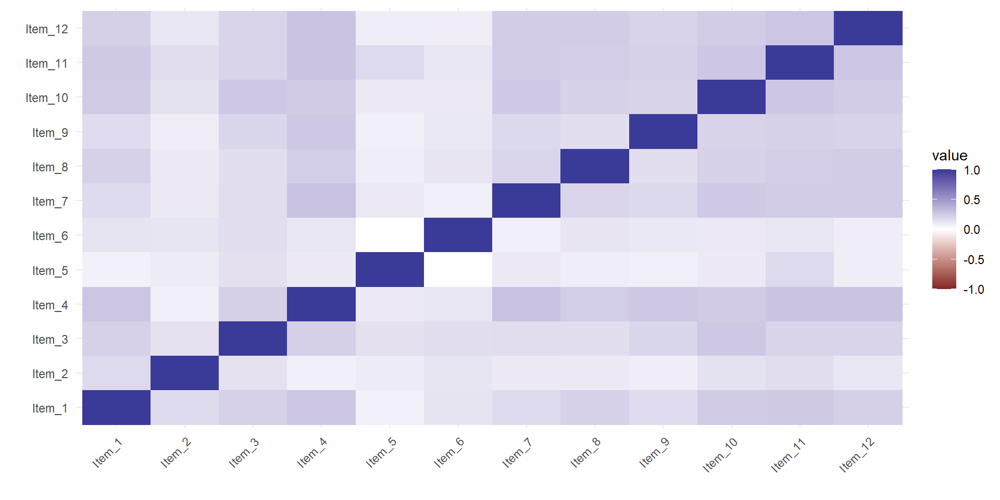
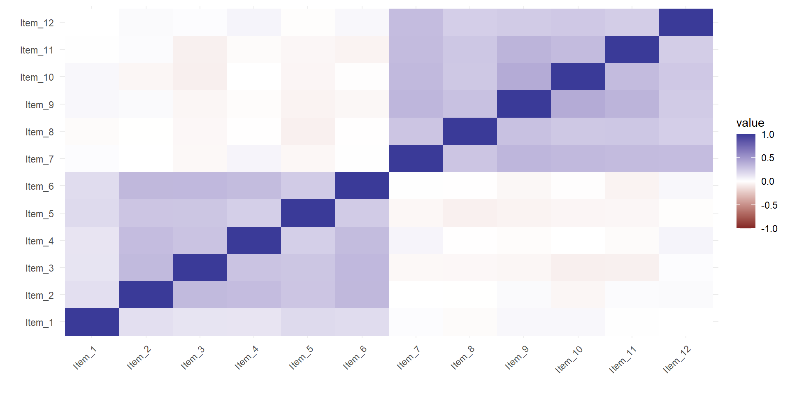
Matrici di correlazione per testare l’unidimensionalità
Dipendenza Locale
L’assunzione di indipendenza locale indica che non esiste alcuna relazione tra le risposte di un soggetto ad item diversi dopo aver controllato per il tratto latente
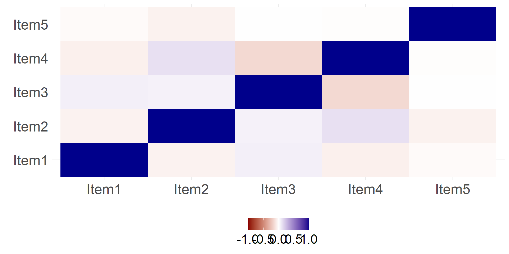
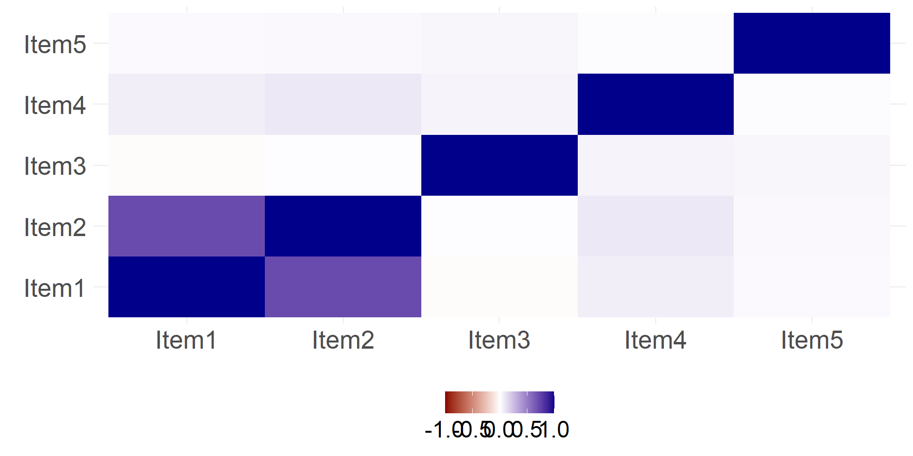
Matrice di correlazione tra i residui standardizzati
Modelli per risposte dicotomiche
In generale
Le caratteristiche delle persone e degli item si trovano sullo stesso tratto latente
Al variare della distanza sul tratto latente, la probabilità di osservare una risposta positiva cambia
(Nella maggior parte dei casi) Quando il parametro relativo alla persona e il parametro relativo all’item sono uguali si ha il 50% di probabilità di osservare una risposta positiva
Si distinguono in base al numero di parametri che descrivono le caratteristiche degli item:
Modello logistico a un parametro (one-parameter logistic model; 1PL) Analogo al modello di Rasch (a un GLM…)
Modello logistico a due parametri (two-parameter logistic model; 2PL)
Modello logistico a tre parametri (three-parameter logistic model; 3PL)
Modello logistico a quattro parametri (four-parameter logistic model; 4PL; usato raramente)
The 1-Parameter Logistic Model
Item Response Function
\[P(x_{pi} = 1| \theta_p, b_i) = \dfrac{\exp(\theta_p - b_i)}{1 + \exp(\theta_p - b_i)}\]
Item Information Function
Misura della precisione con cui ogni item misura diversi livello del tratto latente
\[IIF_i(\theta) = P_i(\theta,b_i)Q_i(\theta, b_i)\]
dove chiaramente \(Q = 1−P_i(\theta_i,b_i)\) è la probabilità che di risposta errata all’item \(i\)
Valore massimo quando \(\theta_p = b_i\) \(\rightarrow\) \(P(x_{pi}=1) = P(x_{pi}=0) =0.50\) \(\rightarrow\) \(\max IIF_i = .25\)
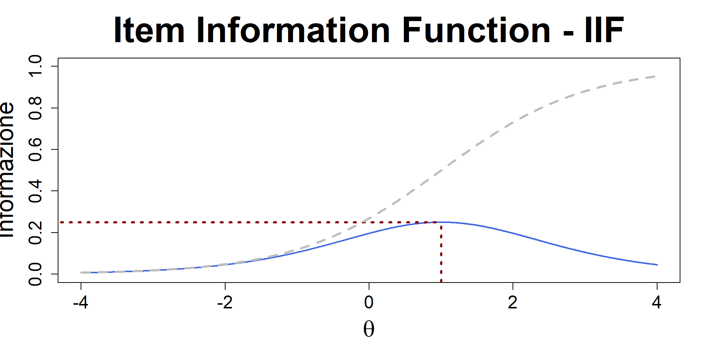Qualsiasi item è più informativo per i soggetti con abilità uguale alla location dell’item \(\rightarrow\) al crescere della distanza tra soggetto e item, cala l’informatività
Tanti soggetti con livelli diversi di abilità \(\rightarrow\) item con livelli di difficoltà distribuiti lungo tutto il continuum latente
IRT
Meglio item con difficoltà diverse, sparpagliate lungo tutto il tratto latente
CTT
Meglio item con difficoltà omogenee
Item con diverse locations: IIF
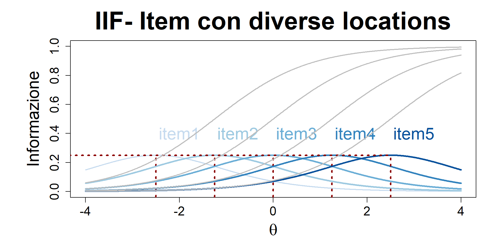Test Information Function
Restituisce una misura dell’accuratezza con cui il test misura complessivamente il tratto latente:
\[TIF(\theta) = \sum_{i=1}^{I} IIF_i(\theta, b_i)\]
La TIF permette di prevedere l’accuratezza con cui è possibile misurare ogni livello di tratto latente
Simile al concetto di attendibilità in CTT
Standard Error of Measurement (SEM)
Descrive la precisione della misurazione:
\[SEM(\theta) = \sqrt{\dfrac{1}{TIF(\theta)}}\] Maggiore è l’informazione, minore è il SEM
Minore è l’informazione, maggiore è il SEM
A differenza della CTT, non si assume che l’errore di misura sia uguale per tutti i soggetti
Relazione TIF e SEM
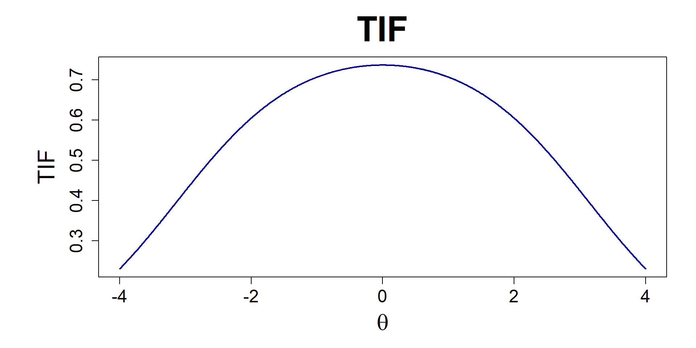
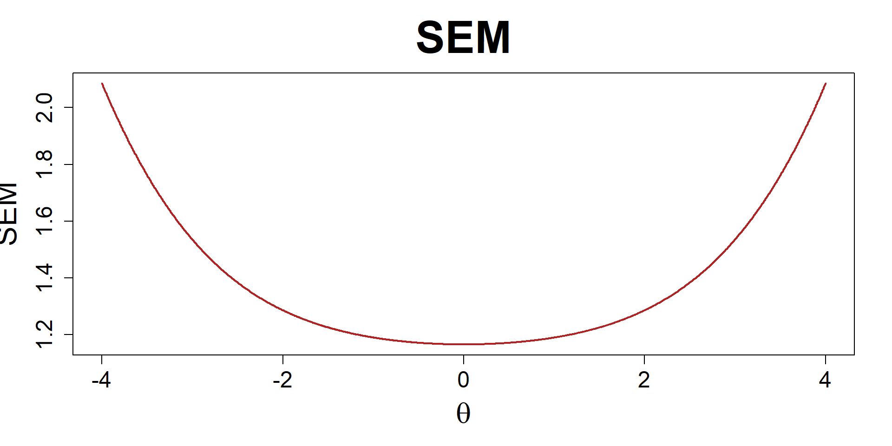
The 2-Parameter Logistic Model
Item Response Function
\[P(x_{pi} = 1|\theta_p, b_i, a_i) = \frac{\exp[a_i(\theta_p - b_i)])}{1 + \exp[a_i(\theta_p - b_i)]}\]
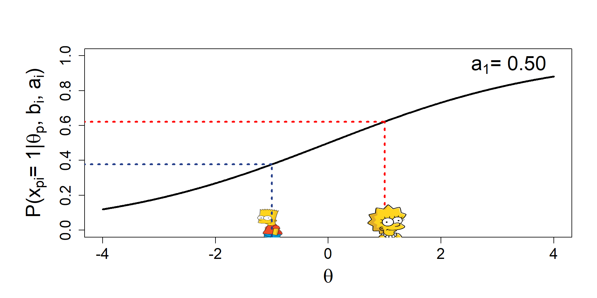
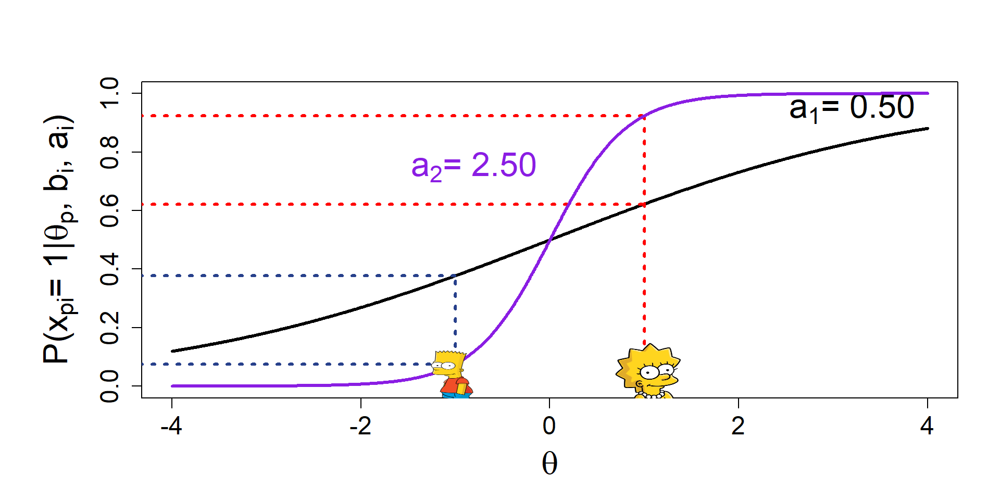
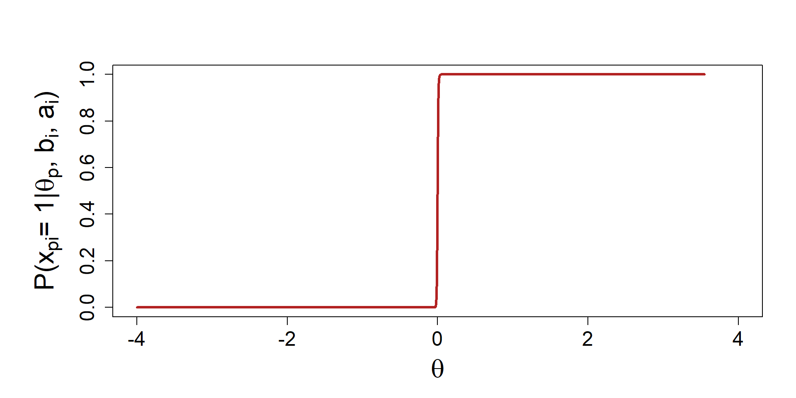
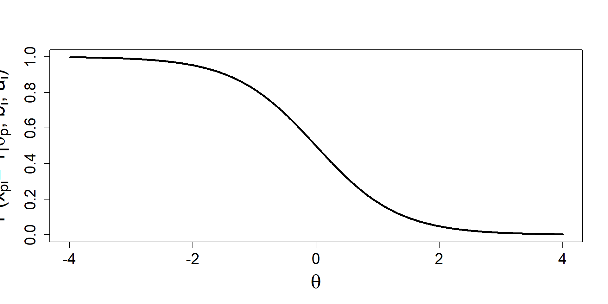
Item Information Function
\[IIF_i(\theta) = a_i^2P_i(\theta, b_i, a_i)Q_i(\theta, b_i, a_i)\]
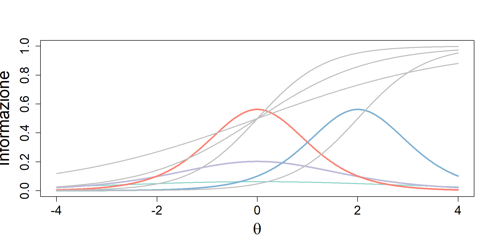Test Information Function
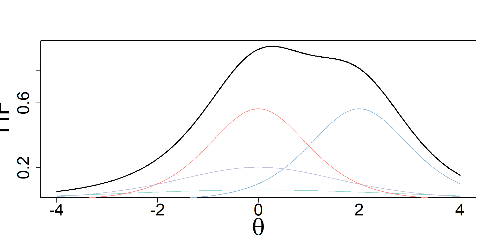In summary
The 3-Parameter Logistic Model
\[P(x_{pi} = 1| \theta_p, b_i, a_i) = c_i + (1 - c_i) \dfrac{\exp[a_i(\theta_p - b_i)]}{1+\exp[a_i(\theta_p - b_i)]}\]
Il parametro \(c_i\) è lo pseduo-guessing: Quando \(\theta \to -\infty\), \(P(x_{pi} = 1) = c_i\)
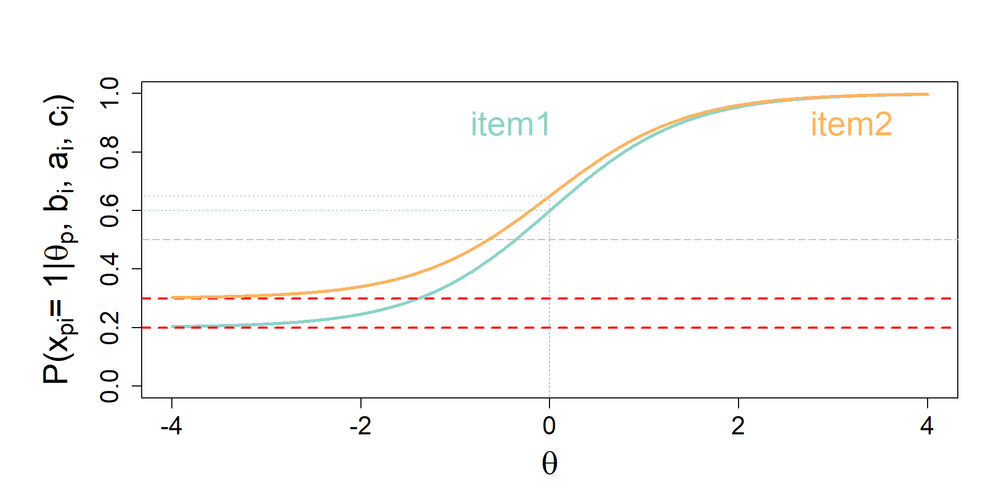Item Information Function
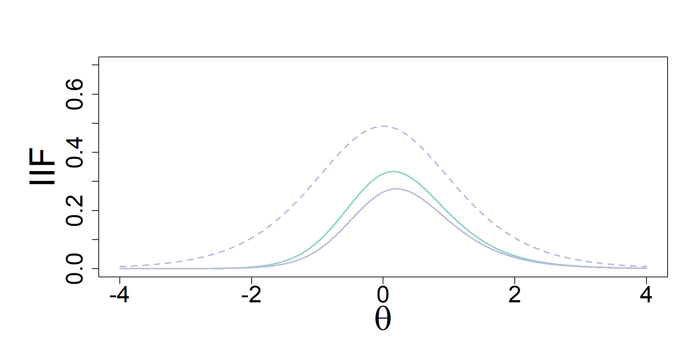Test Information Function
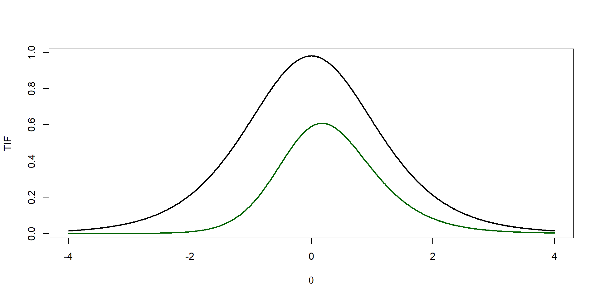The 4-Parameter Logistic Model
Item Response Function
\[P(x_{pi}= 1| \theta_p, b_i, a_i, c_i, d_i) = c_i + (d_i -c_i) \dfrac{\exp[a_i(\theta_p - b_i)]}{1 + \exp[a_i(\theta_p - b_i)]}\]
Il parametro \(d_i\) è la careless error: Quando \(\theta \to +\infty\), \(P(x_{pi}) = d_i\)
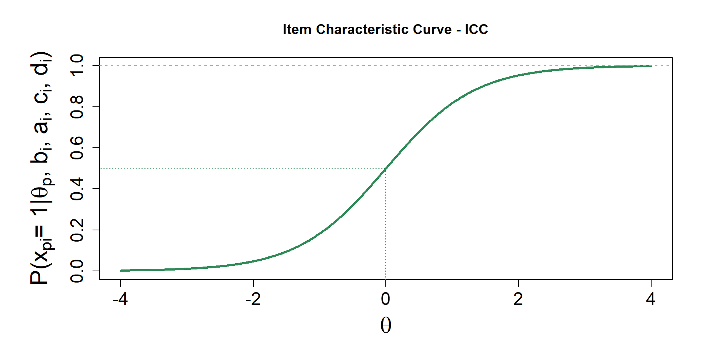
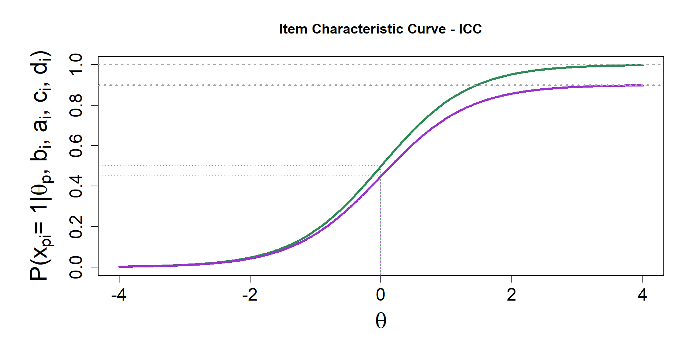
Item Information Function
\[\text{IIF}_{i}(\theta) = \dfrac{a_i^2[P(\theta)-c_i]^2[d_i - P(\theta)]^2}{(d_{i}-c_i)^2 P(\theta)Q(\theta)}\]
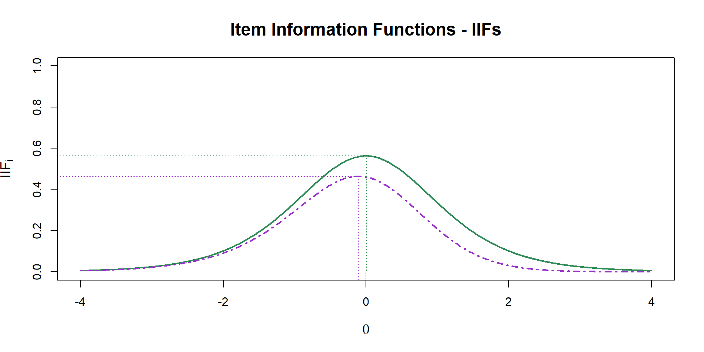Test Information Function
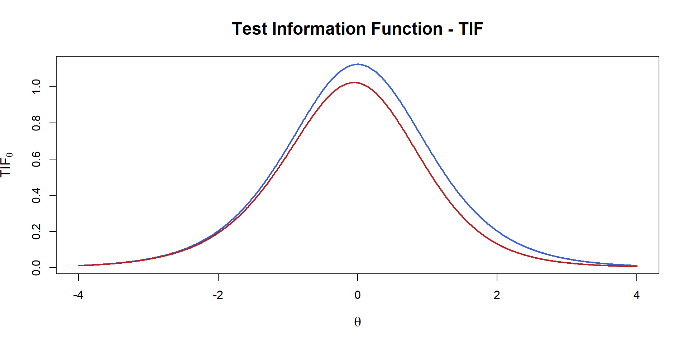L’influenza della careless error
Relazione tra i modelli
Fissando \(d_i = 1\) \(\forall i\) \(\rightarrow\) si ottiene il 3-PL dal 4-PL
Fissando \(c_i = 0\) \(\forall i\) \(\rightarrow\) si ottiene il 2-PL dal 3-PL
Fissando \(a_i = 1\) \(\forall i\) \(\rightarrow\) si ottiene l’1-PL dal 2-PL
Sono tutti modelli annidati!
E il modello di Rasch?
\[P(x_{pi} = 1 |\theta_p,b_i) = \dfrac{\exp (\theta_p -b_i)}{1+ \exp (\theta_p -b_i)}\]
A livello matematico, il modello di Rasch e l’1-PL sono la stessa cosa
Come filosofia sottostante, sono due modelli completamente diversi
1-PL
Si osserva la fit del modello ai dati \(\rightarrow\) Il modello si adatta ai dati e si può scegliere il modello migliore dati i dati
Rasch
Si osserva la fit dei dati al modello \(\rightarrow\) Il modello è “vero”, vanno modificati i dati per farli stare dentro al modello
Tutti i modelli sono sbagliati….
…Ma alcuni sono utili
Il modello può essere scelto:
A priori:
- considerazioni di natura teorica
- caratteristiche degli item stessi
A posteriori:
- Si stimano tutti i modelli IRT sui dati
- Si confrontano e il modello che fitta meglio è il modello scelto
Confronto a posteriori basato sugli indici di fit comparativi
\(-2\)LogLikelihood: Differenza tra la LogLikelihood di due modelli annidati
Akaike’s Information Criterion
Bayesian Information Criterion

Lezione @ Milano-Bicocca